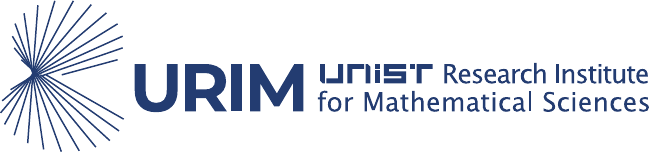
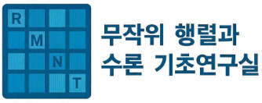

International Conference
Arithmetic and
Dynamical Aspects of
L-functions
Learn more →
Organizers
Ashay Burungale
The University of Texas at Austin
Hae-Sang Sun
Ulsan National Institute of Science and Technology
Sponsored by


Random Matrices and Number Theory (RMNT)
Basic Research Lab
National Research Foundation of Korea (NRF)
This conference is supported in part by the National Research Foundation of Korea (NRF) funded by the Korean government (MSIT).